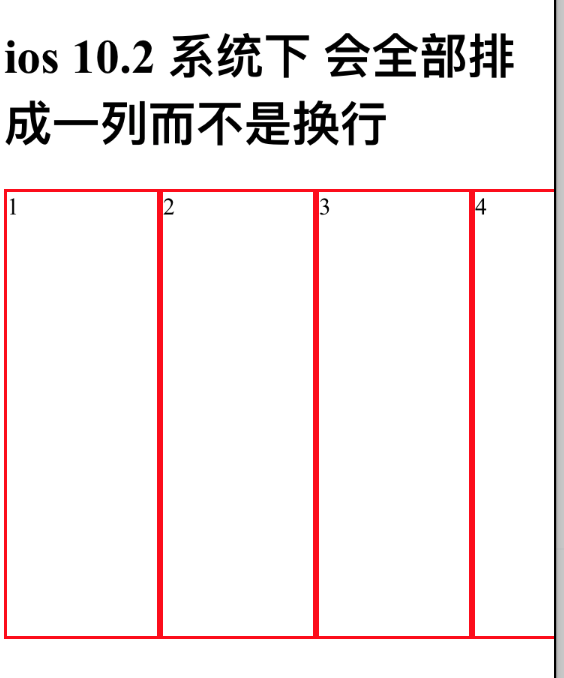

实际上是 flex-basis 的默认值在 iOS10.2及以下为 0 而不是 auto 导致的。
背景
项目上有一个列表要有这种效果：
- 只有一个的情况是一个占一排
- 有两个的情况是 各占50%
- 有三个或以上的情况是 每个占 1/3
所以这时候用flex是最容易的。
大于三个的直接补全至3的倍数即可
代码大致思路：1
2
3
4
5
6
7
8
9
10.demo {
display: flex;
flex-wrap: wrap;
height: 100px;
}
.demo div {
border: 1px solid red;
flex: 1;
min-width: 30%;
}
1 | <div class="demo"> |
本来是完美无缺的，但是在测试过程中，发现说 iOS 10.2 及以下版本会出现 flex-wrap没有正确换行的情况，就算大于三个的情况 全部也都会挤在同一行。 该bug在 10.3不会重现。

解决方案
本来有考虑不用 flex 而是用 inline-block 或 float 来解决，但是还是觉得 flex 解决比较优雅一点。
所以多番尝试后发现说，不写 flex:1 而是写成 flex:1 1 auto就没问题。
在safari调试了一下，发现 iOS10.2及以下 flex-basis 属性的默认值为 0 而不是 auto.
所以所有的项都变成挤在一起。
所以在原来代码上加多一行 flex-basis: auto; 重置掉 flex-basis: 0; 带来的问题即可。